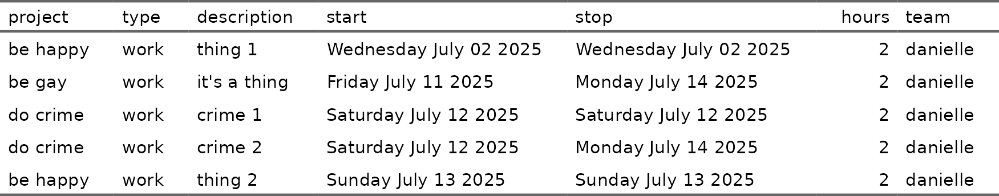

Personal package to help me track my tasks. Unlikely to be of value to anyone else.
Installation
You can install the development version of calendario like so:
pak::pak("djnavarro/calendario")Example
library(calendario)
cal <- calendario$new()
# verbose way to do it that I never do
cal$add_task(
description = "it's a thing",
start = as.Date("2025-07-11"),
stop = as.Date("2025-07-14"),
project = "be gay",
team = "danielle"
)
# more convenient
cal$set_project("do crime")
cal$add_task("crime 1", "12 jul")
cal$add_task("crime 2", "12 jul", "14 jul")
# most common workflow
cal |>
project("be happy") |>
task("thing 1", "2 jul") |>
task("thing 2", "13 jul")
#> <calendario object>
#> • be gay [1 task]
#> • be happy [2 tasks]
#> • do crime [2 tasks]
# printing gives minimal summary
cal
#> <calendario object>
#> • be gay [1 task]
#> • be happy [2 tasks]
#> • do crime [2 tasks]
# extracting tasks returns a tibble
cal$get_tasks()
#> # A tibble: 5 × 7
#> project type description start stop hours team
#> <chr> <chr> <chr> <date> <date> <dbl> <chr>
#> 1 be gay work it's a thing 2025-07-11 2025-07-14 2 danielle
#> 2 do crime work crime 1 2025-07-12 2025-07-12 2 danielle
#> 3 do crime work crime 2 2025-07-12 2025-07-14 2 danielle
#> 4 be happy work thing 1 2025-07-02 2025-07-02 2 danielle
#> 5 be happy work thing 2 2025-07-13 2025-07-13 2 danielle
# showing tasks returns a flextable
cal$show_tasks()
# extracting a calendar returns a list of tibbles
cal$get_calendar("1 jun", "11 aug")
#> [[1]]
#> # A tibble: 5 × 7
#> Month Days Mon Tue Wed Thu Fri
#> <ord> <chr> <dbl> <dbl> <dbl> <dbl> <dbl>
#> 1 Jun 2-6 0 0 0 0 0
#> 2 Jun 9-13 0 0 0 0 0
#> 3 Jun 16-20 0 0 0 0 0
#> 4 Jun 23-27 0 0 0 0 0
#> 5 Jun 30 0 NA NA NA NA
#>
#> [[2]]
#> # A tibble: 5 × 7
#> Month Days Mon Tue Wed Thu Fri
#> <ord> <chr> <dbl> <dbl> <dbl> <dbl> <dbl>
#> 1 Jul 1-4 NA 0 2 0 0
#> 2 Jul 7-11 0 0 0 0 2
#> 3 Jul 14-18 4 0 0 0 0
#> 4 Jul 21-25 0 0 0 0 0
#> 5 Jul 28-31 0 0 0 0 NA
#>
#> [[3]]
#> # A tibble: 3 × 7
#> Month Days Mon Tue Wed Thu Fri
#> <ord> <chr> <dbl> <dbl> <dbl> <dbl> <dbl>
#> 1 Aug 1 NA NA NA NA 0
#> 2 Aug 4-8 0 0 0 0 0
#> 3 Aug 11 0 NA NA NA NA
# showing a calendar returns a flextable
cal$show_calendar("1 jun", "11 aug")